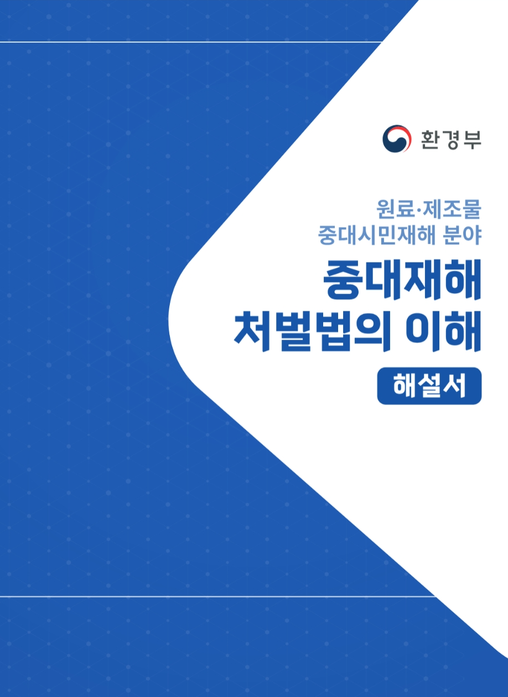
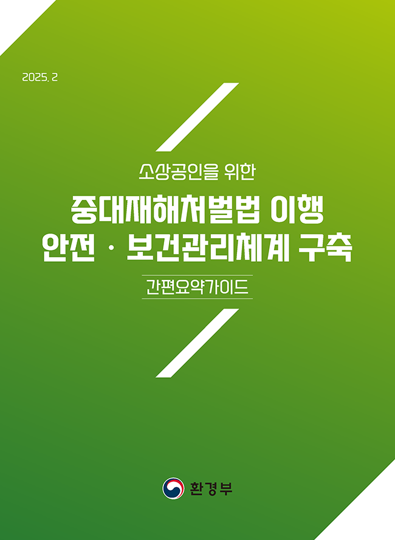

중대시민재해 자료실
원료·제조물 중대시민재해 통합 자료집
기후에너지환경부가 제공하는 원료·제조물 중대시민재해 통합 자료집으로 중대재해처벌법 해설서와 리플릿, 소상공인 간편요약가이드 다운로드 및 이북(eBook) 바로보기를 한 곳에서 제공합니다.
-
중대재해처벌법의 이해 | 해설서
원료·제조물 분야 중대시민재해 관련 가장 자세한 내용을 담은 해설
본 해설서는 「중대재해 처벌 등에 관한 법률(법률 제17907호, 2021.1.26 제정)」 주요 내용을 알기 쉽고 자세하게 정리한 것으로서, 법령의 골자와 주요 제도들에 대한 개요 및 제도 해설 등을 담았습니다.
안전·보건관리체계를 구축하고 이행하는 데 참고할 내용을 정리한 것으로 법적인 효력이 있는 것은 아닙니다. 사업 또는 사업장의 특성과 환경에 맞는 안전·보건관리체계 구축 및 이행에 활용하시기 바랍니다.
본 해설서는 2023년 12월 기준으로 작성되었습니다.

-
중대재해처벌법의 이해 | 리플릿
원료·제조물 분야 중대시민재해 관련 가장 자세한 내용을 담은 해설서
중대재해처벌법의 목적과 구조, (원료·제조물 분야) 중대시민재해 정의 및 범위, 적용대상과 시기, 안전·보건 확보의무와 처벌 관련 내용까지 꼭 알아야 하는 주요 사항만을 담았습니다.
본 리플릿의 내용은 원료·제조물 분야 중대시민재해 해설서의 내용을 기반으로 작성되었습니다.
-
중대재해처벌법 이행 안전·보건관리체계 구축 | 소상공인 간편요약가이드
소상공인 대상 안전·보건관리체계 구축 핵심 내용을 한눈에 확인할 수 있는 요약 가이드
소상공인이 원료·제조물 분야 중대시민재해 예방을 위한 안전·보건관리체계를 구축할 때 참고할 수 있는 핵심 정보를 간략하게 정리하여 제공하기 위해 발간하였습니다.
본 가이드는 2025년 2월 기준으로 작성되었습니다.

생활화학제품 및 살생물제 취급 사업장 자료집
기후에너지환경부가 제공하는 생활화학제품 및 살생물제 취급 사업장 대상 중대시민재해 예방 자료로, 안전·보건관리체계 구축 우수사례집과 중대재해처벌법 해설 리플릿 다운로드 및 이북(eBook) 바로보기를 한 곳에서 제공합니다.
-
중대재해처벌법의 이해 | 해설서
원료·제조물 분야 중대시민재해 관련 가장 자세한 내용을 담은 해설
본 해설서는 「중대재해 처벌 등에 관한 법률(법률 제17907호, 2021.1.26 제정)」 주요 내용을 알기 쉽고 자세하게 정리한 것으로서, 법령의 골자와 주요 제도들에 대한 개요 및 제도 해설 등을 담았습니다.
안전·보건관리체계를 구축하고 이행하는 데 참고할 내용을 정리한 것으로 법적인 효력이 있는 것은 아닙니다. 사업 또는 사업장의 특성과 환경에 맞는 안전·보건관리체계 구축 및 이행에 활용하시기 바랍니다.
본 해설서는 2023년 12월 기준으로 작성되었습니다.